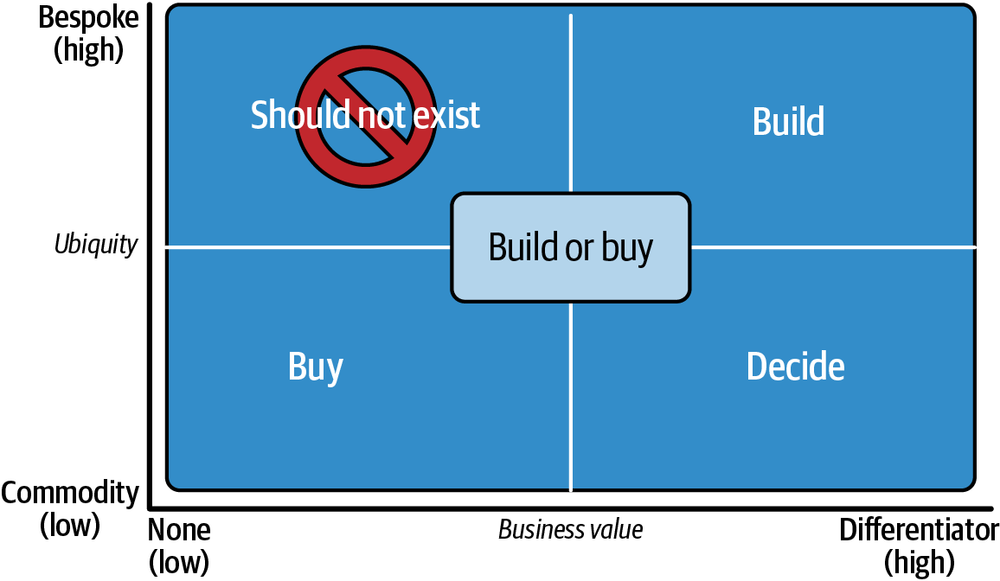
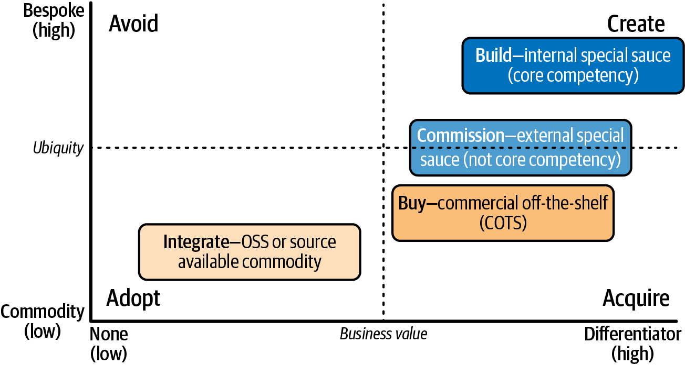
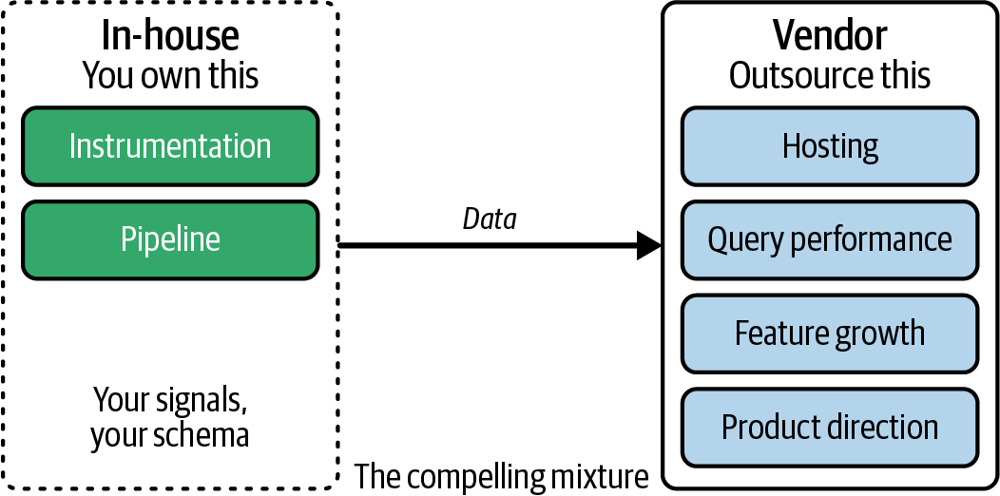

<title>第 29 章　自己建立與購買（以及開放原始碼） — 《可觀測性工程》第二版</title>
<link rel="stylesheet" href="style.css">

<nav class="chapnav">
    <a href="ch28.html">← 上一章</a>
    <a href="index.html">目錄</a>
    <a href="ch30.html">下一章 →</a>
  </nav>
<main>
  <header class="masthead">
    <span class="eyebrow">Observability Engineering · Second Edition</span>
    
    <h1 class="title serif">第 29 章<br>自己建立與購買（以及開放原始碼）</h1>
    <div class="rule"></div>
  </header>

  <p>在自己建立、購買或採用開放原始碼軟體（OSS）之間做選擇，很少只是單純的技術比較；這是一項高風險的經濟決策，決定了組織最寶貴的資源——工程時間——將花在何處。雖然在人工智慧時代產生程式碼從未如此快速容易，但維護客製化基礎架構的長期成本依然居高不下。團隊每花一小時維護一個不具差異化的內部工具，就少一小時投入驅動市場佔有率的核心產品。</p>
<p>本章提供一套框架，協助你以清晰的角度審視這些取捨。我們將檢視每種做法真正的成本——包括顯而易見與隱藏的成本——並協助你判斷這些投資究竟會累積成競爭優勢，還是只會增加技術債。討論結束時，你將能夠分辨哪些基礎架構應該視為商品，哪些又值得自行客製開發。</p>
<p>畢竟，自己建立與購買並非二選一的抉擇；而是一個多維度的光譜。幾乎每個人最終都會購買一些軟體、使用一些開放原始碼，並自行撰寫一些程式碼。真正重要的問題是：選哪個、用在哪裡、為什麼？</p>
<p>這個主題並不新鮮，但近年來其中的取捨與相關性已有相當程度的轉變。如前幾章所述，許多公司如今花在可觀測性帳單上的費用，幾乎超越除了雲端支出以外的任何其他工具類別。</p>
<p>下一章將帶領你了解評估供應商、管理供應商關係，以及跨越公司與產業界線發揮影響力的過程。這一章與下一章合起來構成一個知識區塊，能幫助你在觀測現代系統時，穿越商業與工程複雜度交織的荊棘叢林。</p>
<h2 class="section serif">你比較討厭失去金錢，還是失去時間？</h2>
<p>有一個古老的資料庫管理員（DBA）笑話：當你重視時間、不在乎金錢時，就會用 Oracle；當你不在乎時間、重視金錢時，就會用 MySQL。（好啦，我們早說過這是個老笑話了。年輕讀者們，就假裝我們說的是「DuckDB」和「Snowflake」吧，好嗎？）雖然技術不斷演進，但這種根本的取捨依然不變。</p>
<p>在每一場自己建立與購買的討論中，你其實是在選擇要容忍哪一種痛苦：</p>
<dl class="deflist"><dt>「討厭花錢」路線</dt><dd>站在這個光譜這一端的團隊，幾乎不會被高昂的價格嚇到。他們把工程專注力視為最珍貴、也最有限的資源。對他們來說，只要能買回時間與專注力來投入核心產品創新，花錢就是「便宜」的。</dd><dt>「討厭花時間」路線</dt><dd>對這些團隊來說，資金才是最稀缺的資源。他們可能覺得，要說服公司花100 萬美元增加工程人力，比說服花 10 萬美元購買工具還容易。他們寧願承擔長期的成本，也要避免一筆前期的帳單。</dd></dl>
<p>大多數團隊犯的錯誤，是沒有意識到自己正在做這個選擇。他們認為建置內部工具是「免費」的，因為薪水本來就要付，卻忽略了這些工程師如果去做別的事，所能創造的驚人機會成本。</p>
<h2 class="section serif">揭露我們的偏見</h2>
<p>既然你已經思考過自己究竟更重視保護資金還是保護工程週期，我們接著必須看看，為什麼你的答案很可能因為人性而產生偏差。讓我們明確指出，在自己建立與購買的辯論中，最常反覆出現的一些偏見與謬誤。</p>
<p>首先是我們身為一家可觀測性軟體供應商員工本身的偏見。我們一再看到，組織會嚴重低估自行建置解決方案的真實成本，甚至低估維運開源工具的成本。一個看似便宜的解決方案，一旦把薪資、雲端支出與機會成本都算進去，成本很快就會累加上去。因此，我們往往傾向認為購買解決方案能提供更好的價值。</p>
<p>第二點，反過來說，是工程偏見。正如 Rick Clark——曾任職於 Mastercard、VMware、Cisco 和 Pivotal Software，本章將大量引用他的經驗——所說：「每當 CTO 詢問工程師應該自己建立還是購買時，工程師都會回答『建立』。工程師想要建立，就像外科醫生想要動刀一樣——他們對自己的技能有一種職業偏見。」</p>
<p>這種偏見是人的天性。我們之所以成為工程師，是因為我們熱愛建構。但能建構某樣東西，不代表就應該去建構。建構非差異化基礎設施的機會成本可能高得驚人。維護成本永遠會遠遠超過建構成本，差距大到令人心驚，卻又無法在事前準確估算。1</p>
<p>這兩者或許是最大的偏見，但還有許多其他因素會扭曲這場辯論。沉沒成本謬誤經常出現：「我們花了這麼多時間建立這個，現在不能放棄！」，還有 NIH（非我發明）偏見：「我們是如此特別的存在，沒有人能理解我們的需求。」也有人擔心供應商可能倒閉，或利用供應商鎖定與資料重力來提高你的價格，這些擔憂都有其道理。如果你的組織過去曾嘗試遷移卻失敗過，遷移本身甚至可能在你心中形成過度誇大的恐懼。</p>
<p>透過事先點明這些偏見，我們可以跳脫「自己建立」的情感訴求，或是「購買解決方案」的行銷訴求。如果你是採購流程的主導者，鼓勵每位利益相關者把他們真正的擔憂攤在桌面上，這樣大家才能共同評估這些風險的程度。</p>
<p>有一些框架可以用來評估你的選項，並引導這個過程走向明智的結論；我們將在本章介紹兩種。但在我們把標準決策框架套用到這個選擇之前，必須先承認一個根本的事實：可觀測性不像其他軟體。</p>
<h2 class="section serif">可觀測性不像其他軟體</h2>
<p>在大多數情況下，我們一直把可觀測性當作其他軟體來對待。但它並非如此。可觀測性是監看監看者的軟體。這代表你對可觀測性工具的可靠性要求，可能會高於其他類型的工具，你也可能需要認真思考如何看待這種風險的集中程度。</p>
<p>最大的風險在於：如果你在同一個雲端供應商、同一個地區、使用與其他生產系統相同的技術堆疊來運行可觀測性服務，那麼只要</p>
<p class="fn">1 沒錯，即使在 AI 輔助編碼的時代，這一點依然成立——雖然新程式碼的成本趨近於零。AI 生成程式碼的維護成本並無不同；如果有差別的話，這些維護成本反而比我們自己寫的程式碼還要高。</p>
<p>其他依賴項出問題時，正好是最糟糕的時機讓你的可觀測性陷入黑暗或出現故障。</p>
<p>你付錢給供應商，買的不只是工具或介面，還包括高可用性，以及一套與你自身依賴項徹底解耦的技術堆疊。</p>
<p>如果你不需要高可用性（意即你的客戶能接受 98%、99%，甚至 99.5% 的可用性——而且你對此很確定），那麼你認為應該可以透過自行運行開源堆疊來大幅省下成本，這個想法大概是正確的。</p>
<p>讓我們從一個簡單的 2 × 2 矩陣開始，評估整體局勢。</p>
<h2 class="section serif">評估<span class="nowrap">「自建與購買」</span>的簡單框架</h2>
<p>本章要討論的自建與購買框架，最初是由前面提到的 Rick Clark 所開發，如今已被數十家公司採用。如圖 29‑1 所示，這是一個簡單的 2 × 2 矩陣，能極快釐清你的思路。</p>
<figure class="plate">
<figcaption>圖 29‑1　自建與購買矩陣，縱軸為普及程度，橫軸為商業價值。</figcaption></figure>
<p>為了這個練習，「自建」應理解為涵蓋從頭撰寫程式碼，到整合一套由開源元件組成的可組合流水線等所有做法。「購買」則意指付費給供應商。本章稍後會探討更細緻的選項組合。</p>
<div class="callout"><p>此框架可用於架構中的任何組成部分，從網路路由器到視覺設計函式庫，以及介於兩者之間的一切事物。在本章中，我們會透過建立與購買可觀測性解決方案的脈絡，以及你可觀測性堆疊中的不同元素，來討論這個框架。</p></div>
<p>首先，來看看這兩軸：</p>
<p>• 水平軸代表商業價值，從「無」（不會增加營收或市佔率）到「差異化因素」（在你的市場中可能帶來顯著的競爭優勢）。</p>
<p>• 垂直軸代表普遍性，從「商品化」（隨處可得、高度標準化）到「客製化」（獨屬於你特定需求）。</p>
<h2 class="section serif">商業價值</h2>
<p>在繼續之前，讓我們先釐清「商業價值」的意思。工程師有時會把商業價值和「重要性」搞混，但兩者其實截然不同。商業價值指的是市佔率和營收影響。建立這個東西會為你帶來更多客戶嗎？客戶會因為你建立了它而願意付更多錢嗎？</p>
<p>每家公司都會執行許多極為重要、但本質上不會增加市場占有率或營收的軟體。2 例如，你的機密保管庫（secrets vault）非常重要，但把它跑在u‑24tb1.112xlarge 高記憶體實例類型（448 顆 CPU、24 TB RAM）上，並不會提升你的市場占有率或營收。</p>
<p>另一種思考方式是：每個組織都有兩類問題。3 一類是所有企業共通的問題（我們如何驗證用戶身分？我們如何監控系統？我們如何管理 DNS？），另一類則是與你的商業模式和競爭定位獨有相關的問題。一般來說，你應該把工程「建構」的心力導向第二類問題。</p>
<p>這個框架的可貴之處在於，它能讓你迅速排除一大批顯然應該建立或購買的軟體，既解放心力又節省時間。（如果你有任何東西落在「不應該存在」的象限，那絕對值得攤在陽光下討論！）這代表你可以把時間和精力保留給那些最值得深入討論的決策。</p>
<p class="fn">2 這也稱為「基礎設施」。</p>
<p class="fn">3 嚴格來說，每個企業都有三類問題：所有企業共通的問題、你的企業獨有但跨團隊共通的問題，以及你的企業獨有且構成你核心價值主張的問題。為求簡化，我們把前兩類合併討論。</p>
<h2 class="section serif">四大象限：自建、購買、不該存在、或決策</h2>
<p>四大象限可指引你做決策：自建、購買、不該存在，或決策。你應該能夠將所操作或需要取得的每一項技術對應到其中一個象限。</p>
<h3 class="subsection">自建（右上）</h3>
<p>「自建」象限代表高商業價值且需求獨特的情境。你的競爭優勢與組織核心能力就存在於此。以 Honeycomb 為例，我們自行打造的差異化能力之一，就是我們的自訂欄位儲存引擎 Retriever（將於第 13 章討論）。這類差異化能力，正是值得自行建立客製解決方案的理由。</p>
<h3 class="subsection">購買（左下）</h3>
<p>「購買」象限代表商業價值低且屬於商品化的技術。大多數基礎設施元件都落在這裡：服務目錄、身分管理、日誌基礎設施以及可觀測性平台。如果它是標準化且無法讓你與眾不同的東西，就直接購買。</p>
<h3 class="subsection">不應存在（左上）</h3>
<p>「不應該存在」象限代表低商業價值與客製化實作的結合。這些東西對你的組織而言是獨一無二的，但實際上並沒有幫助你的業務。它們不應該存在，但很不幸地，它們經常存在。而當它們存在時，往往是最糟糕的一種技術債。</p>
<p>以下是一個真實案例，說明某個組織不應該建立的東西：</p>
<p>[金融機構] 在 Apache HTTPD 1.3.x 中自行撰寫了一個多執行緒請求處理模組。它比原生的排程器快五倍，並與公司所有的流程和應用程式緊密整合。多年後，Apache 2.0 推出，擁有新的模組 API 以及速度更快的多執行緒排程器，而原本的開發人員早已離職。他們因此陷入困境，實際上每秒連線數還落後其他人。當 HTTPD 1.3.x 的支援終於結束時，他們付了超過一千萬美元請顧問公司來收拾這個爛攤子（而且在此之前，整件事還演變成法規遵循問題，因為不受支援的軟體版本無法取得安全更新）。</p>
<p>你最好想辦法徹底消滅這套軟體，找出用其他開源或商業系統完成同樣工作的方法。</p>
<div class="callout"><p>有些這類程式碼庫最終確實被開源了，但實際上，它們一釋出就已經是被遺棄的專案了。</p></div>
<h3 class="subsection">決定（右下）</h3>
<p>「決定」象限代表「高」商業價值，但屬於商品化的領域。這些事物確實能為你的速度與產品品質帶來差異化，但市面上已有不錯的現成方案可選。這裡正是所有困難且有趣的討論會發生的地方。</p>
<p>這裡沒有唯一正確的結論；你必須召集適當的利益相關者，一起把事情釐清。有時候決策取決於公司內部是否具備合適的專業知識，或是你認為競爭優勢的重要性有多高。這類討論往往深受組織習慣與文化的影響。有些公司完全採用商業現成軟體（COTS），有些則高度仰賴開源軟體（OSS）。</p>
<p>我們提醒你，要避免以管理層獨斷的方式做出這些決定。這些決策在社會技術系統中，權重明顯偏向技術面，理應由你的技術領域專家來負責，最好是真正對結果有切身利害關係的人。這正是資深（staff+）工程師存在的意義。若能讓他們參與決策，你會得到更好的結果。</p>
<h2 class="section serif">資深工程師的誘因應該與商業成果一致</h2>
<p>給資深工程師：為了自己的職涯著想，你能做的最好的事情之一，就是在管理層心中建立一種名聲——你會根據業務的實際需求做出好的決策，而不是出於自己想打造酷炫東西的欲望。</p>
<p>給資深工程師的管理者：請根據工程師決策的品質與商業成果的強度來晉升與評等工程師，而不是根據他們寫了多少行程式碼。工程師通常會認為，花 18個月與 2,000 萬美元的工程資源從零打造一套可觀測性解決方案，會比選擇一個好的供應商、建置一些整合、並在內部推廣，更有機會晉升為首席工程師——即使後者的成本只需四分之一、時間只需一半（而且整體產品往往還做得更好）。</p>
<p>這並非工程師憑空想像；他們一再目睹晉升流程中確實會發生這種情況。這正是全球技術債最大的成因之一。如果你希望你的工程師根據商業成果做出好的決策，那麼身為領導者，你就必須根據商業成果來獎勵好的決策。</p>
<p>當你進入「決策」象限、必須做出決定時，以下是幾個關鍵問題：</p>
<p>這個軟體究竟該完成什麼工作？</p>
<p>制定一份組織能夠檢視並參與討論的客觀標準。從高層次的故事與情境著手，而非一開始就列出一堆功能清單或特定廠商的實作方式。我們會在下一章討論廠商工程時更深入探討這個流程。</p>
<p>我們的需求有多獨特？</p>
<p>如果你認為「沒有人跟我們一樣」，那你很可能是錯的。大多數公司彼此之間的相似程度，遠比他們自己以為的要高。拿你的標準去對照同業的類似架構與案例研究，看看他們是如何解決這個問題的，以及既有系統無法滿足你的使用情境有哪些差異之處。</p>
<p>這個問題最小可行的解法是什麼？</p>
<p>如果商用工具就能滿足 80% 到 90% 的需求，並能以擴充功能補足其餘部分，就不要打造龐大的自訂平台。</p>
<p>我們是否有足夠的產品管理專業能力可以投入這件事？</p>
<p>打造內部工具需要產品思維、用戶研究、迭代週期與路線圖管理，還需要內部的宣傳與行銷。若缺乏這樣的紀律，最終只會得到一個乏人問津、始終無法被採用的工具。</p>
<p class="fn">我們的時程規劃是什麼？</p>
<p>貴公司能否負擔等待數月甚至數年來取得客製化解決方案，還是需要立即開始行動？</p>
<p>誰來負責維護？</p>
<p>當建置系統的人員離職之後，誰來負責維護？</p>
<p>如果你們最後決定自行建置，是因為市面上沒有完全符合需求的解決方案，但有幾個很接近，那就設定提醒事項，一年後再回頭檢視一次。</p>
<p>有一個不太科學的經驗法則可以參考：越接近把位元寫入磁碟的層級，就越應該保守，優先選用經過實戰驗證的程式碼。用戶體驗（UX）則位於光譜的另一端；越接近 UX 的部分，你就越有可能得自行撰寫客製化程式碼來處理自己的使用情境，也就不必那麼謹慎。</p>
<p>要撰寫一個全新的資料庫、作業系統或檔案系統格式，你需要非常、非常充分的理由。但如果是在 OTel 之上撰寫一個新的函式庫，讓前端團隊能夠直覺、輕鬆地進行檢測，藉此獲得應用程式回應性的端到端洞察？嗯，這聽起來就相當合理了。</p>
<h2 class="section serif">將範例對應到象限</h2>
<p>讓我們把這套評估準則套用到可觀測性領域幾個常見的「待完成任務」上。</p>
<h3 class="subsection">範例一：自訂 SLO／錯誤預算追蹤</h3>
<p>待完成任務：工程師需要了解他們的服務是否達成可靠性目標，以及是否還有剩餘的預算可供實驗。</p>
<p>我們的需求究竟有多獨特？你的服務水準目標（SLO）大概不外乎是：延遲百分位數、錯誤率、可用性——跟大家都一樣。差異可能在於：「我們的流量模式比較特殊（批次作業、零售週期）」或「我們需要把這個跟部署閘道綁在一起」。這些每家供應商都做得到。4 你以為自己有 37 個微服務就與眾不同？大家都有。</p>
<p>最小可行版本：80% 的服務直接使用廠商提供的 SLO 功能。只針對 3 到 5 個確實有特殊需求的服務建置自訂工具（也許你的機器學習推論流水線的延遲特性跟 HTTP 服務不一樣）。</p>
<p>我們有產品管理的專業能力嗎？這正是內部 SLO 工具的死穴。有人建置了它，卻難以使用，沒有人持續迭代改進，最後大家又回頭去用舊的儀表板。</p>
<p>時程：你的財務長希望下一季就能拿到可靠性指標。但你不可能花一年時間等你的自訂解決方案完成。</p>
<p>誰來支援它？當初建置它的資深工程師剛升職，不想再處理這件事了。</p>
<p>結論：90% 的使用情境選擇購買，而對於真正獨特的業務邏輯，或許可以建立輕量的包裝層。</p>
<h3 class="subsection">範例 2：自訂檢測函式庫包裝層</h3>
<p>待完成的工作：前端開發人員需要在不必成為 OTel 專家的情況下檢測他們的React 應用程式。我們希望有一致的模式，並自動包含我們特定的情境資訊。</p>
<p>我們的需求有多獨特？你的 React 應用程式⋯⋯就是個 React 應用程式。但UX 需求——讓你的團隊使用起來極其簡單——確實是合理的。通用的 OTel SDK 對你的開發人員的工作流程來說儀式感太重了。</p>
<p class="fn">4 唯一的區別特徵在於，大多數供應商並未以雙向方式從資料中推導出他們的 SLO。使用三大支柱世代的工具，或是專精於 SLO 的供應商，你無法做到「顯示違反我的 SLO 的請求，讓我尋找其中的模式」。這是一項殺手級能力，只有現代化、統一的可觀測性工具才能提供。</p>
<p class="fn">最精簡的版本：一個薄的 OTel 包裝層，具備以下功能：</p>
<p>• 自動擷取你的標準情境（用戶 ID、工作階段 ID、feature flag 等等）</p>
<p>• 提供三到四個常見模式的輔助函式</p>
<p>• 大約只有 200 行程式碼</p>
<p>你有產品管理方面的專業能力嗎？你需要一個了解開發者工作流程、並能根據採用情況進行迭代的人。這可以是輕量級的——也許是一位在乎開發者體驗（DX）的資深工程師就足夠了。</p>
<p>時程：你可以在兩週內完成並上線。</p>
<p>誰來負責維護？這個系統輕量到你的前端平台團隊就能擁有它。表面積小意味著維護負擔低。</p>
<p>結論：值得建立！這是一個 UX 層，而非基礎架構。你並不是在建立一個新的追蹤後端，而是讓 OTel 在你的情境中變得更符合人體工學。</p>
<h3 class="subsection">範例 3：成本歸屬與內部計費</h3>
<p>待完成任務：工程團隊需要了解他們的可觀測性成本，並與其服務所有權掛鉤，才能就要檢測哪些項目以及取樣的積極程度做出明智的權衡取捨。</p>
<p>我們的需求有多獨特？你的組織結構是你獨有的——哪些團隊擁有哪些服務、內部如何計費、是依成本中心還是依業務單位進行內部計費。而底層問題（衡量並分配可觀測性支出）在規模化之後是普遍存在的，因此每家廠商都會有自己的做法。大多數廠商會提供組織層級的計費，也許還有一些基本的標籤功能用於成本分配。很少有廠商能提供「X 團隊本月花費 4,500 美元；以下是依服務別的明細」這樣的資訊。能與你的內部計費系統整合的則更是少之又少。</p>
<p>最小可行版本：利用廠商的標籤功能達成 80% 的目標。建立一個輕量的腳本，透過 API 抓取計費資料，將其對應到你內部的團隊結構，並產生月報。不要建置一個完整的成本管理平台。</p>
<p>我們有產品管理方面的專業能力嗎？這既是政治問題，也是技術問題。你需要一個既懂計費面、又懂工程文化的人。若缺乏持續的迭代，各團隊會鑽你成本分配機制的漏洞，或是乾脆完全無視它。</p>
<p>時程：如果你正在為可觀測性大失血，你需要的是這一季就有可見度，而不是明年才有。</p>
<p>誰來支援它？這個議題尷尬地橫跨財務、平台與工程三個部門。務必確保有人真正擁有它，否則一旦優先順序改變，它就會胎死腹中。</p>
<p>結論：購買可觀測性平台，並且只有在（且僅在）你有可觀的支出規模與真正的內部計費文化時，才自行建置歸因層。大多數公司應該只使用廠商標籤與人工報表即可。</p>
<h2 class="section serif">通用模式</h2>
<p>從這些範例中浮現的模式如下：</p>
<dl class="deflist"><dt>基礎設施／儲存</dt><dd>這幾乎總是應該購買。</dd></dl>
<p>使用者體驗／工作流程這通常是自行建置（小型、聚焦的工具，或薄層封裝與包裝器）。</p>
<p>智慧／決策制定（任何需要三個月以上才能開發完成的東西）</p>
<p>只有在有強力的專案管理承諾時才自行建置。</p>
<p>「決定」象限充滿了這類東西：技術能力日益商品化，但你的工作流程、你的業務背景，或是你的組織結構會造成差異。問題在於，這些差異是否足以證明需要完全重建，而不是延伸廠商工具。</p>
<h2 class="section serif">開放原始碼呢？</h2>
<p>開放原始碼與可取得原始碼的軟體，是一個無法簡單歸入前述自行建置與購買矩陣的選項。這並不完全是「自行建置」——你並非從零開始創造某樣東西。但這也不完全是「購買」——你並非付錢給廠商替你處理複雜性。不過，你可能會購買系統整合工作，好讓它與你其餘的基礎設施一起安裝，或者，至少購買服務與支援以維持其運作。</p>
<p>最好把開放原始碼理解成第三種選項，它會改變你支付成本的方式。你不是預先支付授權費或使用費，而是以下列方式支付成本：</p>
<p>•用於評估、部署及整合的工程時間•</p>
<p>•運行軟體的基礎設施成本•</p>
<p>•持續的維護與升級工作•</p>
<p>•工程師花時間維護基礎設施而非建置產品功能所造成的機會成本損失•</p>
<p>•招募並留住在那些特定開放原始碼工具上具備專業能力的工程師•</p>
<p>正如開發者布道師 Heidi Waterhouse 令人印象深刻的比喻：OSS 是「像小狗一樣免費，而不是像啤酒一樣免費」。取得一隻小狗要花 $0，但接下來的好幾年都需要餵食、看獸醫、訓練與照顧。同樣的道理也適用於開源可觀測性工具。</p>
<p>這並不代表你不該使用開源；許多組織確實從中獲得了巨大的價值。但你必須完全清楚它究竟讓你付出了什麼代價，並且在充分了解的情況下做出決定。</p>
<p>原始碼可見（source‑available）與開源非常相似，關鍵差異在於你無法直接自訂、擴充，甚至修復程式碼。</p>
<h2 class="section serif">納入開源的框架</h2>
<p>如果開源採用是選項之一（或是併購、顧問公司及其他混合解決方案），你可能會發現 Peter Corless 所提出的決策框架改編版本很有幫助，如圖 29‑2 所示。</p>
<figure class="plate">
<figcaption>圖 29‑2. 自建與購買 2 × 2 矩陣，擴充後納入開源、原始碼可見、COTS（商業現成軟體）、委製、顧問及併購等選項。</figcaption></figure>
<p>此處的座標軸與先前相同：</p>
<p>• x 軸代表商業價值，範圍從「無」到「差異化因素」。</p>
<p>• y 軸代表普遍性，範圍從「商品化」到「客製化」。</p>
<p>在較簡單版本的 2 × 2 中，我們的四個象限分別稱為：自建、購買、不應存在，以及決定。</p>
<p>在這個「豐富版」中，對應的象限分別是：建立、採用、取得與避免。象限的意義大致相同，但為了更符合開源的脈絡而重新命名。</p>
<p>這次我們想繪製的類別無法整齊地對應到整個象限，但我們會說明每個類別落在 2 × 2 圖上的哪個位置。這些類別包括：「整合」（OSS 或原始碼可取得），落在「採用」象限；「購買」（COTS、某些 SaaS），落在「取得」象限；以及「委外」（通常是顧問），橫跨「建立」與「取得」象限；此外還有標準的「自建」與「不該存在」象限。</p>
<h2 class="section serif">四個象限：避免、建立、採用、取得</h2>
<p>這四個象限與第 510 頁〈評估「自建與購買」的簡單框架〉中討論的 2 × 2 矩陣具有相似之處。相同之處我們不再重複說明，但會標註兩者的差異之處。</p>
<h3 class="subsection">建立（右上）</h3>
<p>自建類別與評估的簡單框架相同：高商業價值加上量身打造的解決方案。</p>
<p>這是可能具有重大智慧財產價值的軟體。你可以決定將其作為商業機密保留、註冊商標，或申請專利。它可能成為你自家 COTS 產品或服務項目的基礎。業界中較有胸襟的領導者甚至可能將其以原始碼可取得或 OSS 的形式提供給其他組織，讓這個循環得以完整地繞回原點。</p>
<h3 class="subsection">避免（左上）</h3>
<p>「避免」類別也與評估的簡單框架相同：低商業價值且需要量身打造解決方案的問題，不該存在。</p>
<h3 class="subsection">採用（左下）</h3>
<p>「採用」類別代表低商業價值加上商品化。這是 OSS 與原始碼可取得授權程式碼的領域，也是大多數基礎架構元件所在之處：代理程式、SDK、服務目錄、身分管理、日誌基礎架構、可觀測性平台。如果它是標準的、無法讓你與眾不同——那就直接下載並採用它。從軟體開發者的角度來看，優點是你可以看到程式碼以診斷底層問題，而在 OSS 的情況下，你甚至可以貢獻修復方案。</p>
<h3 class="subsection">取得（右下）</h3>
<p>「取得」類別代表某種超越開源方案的商業價值，以及關鍵的差異化。這是屬於現成商用軟體（COTS）產品與 SaaS 方案的領域，這些方案具備你願意付費取得的進階功能。你可以針對自己的環境進行客製化，或許能撰寫一些自訂外掛或連接器，但無法從根本上改變其程式碼庫。在大多數情況下，你甚至看不到程式碼庫，這可能會讓診斷與排除最棘手的問題變得困難。</p>
<h3 class="subsection">委外開發（中右）</h3>
<p>介於「建立」與「取得」邊界之間的是「委外開發」類別：屬於客製化工程與外包工作的領域。當你需要現成市面上買不到的軟體，但這又不是你需要發展成內部核心能力的東西——或者你單純沒有時間或內部資源時，就會採取這種做法。這純粹是為了把工作做好、做快而找的傭兵式合作。你仍然必須自己撰寫規格書，但由外包人員來執行工作。也許只是為你所取得的商用軟體撰寫其中一個客製化外掛或連接器；也許是更複雜精細的東西，例如客製化儀表板、CI/CD 工作流程，或是資料科學演算法與模型。委外開發軟體的優點是，程式碼寫完後歸你所有。但與此同時，這也是最大的缺點。</p>
<p class="fn">永遠都有「氛圍程式設計（vibe coding）」這個選項</p>
<p>以上絕非涵蓋所有可能取得軟體方式的完整清單。我們的清單甚至沒有把Claude 或 ChatGPT 算進去，因為我們只列出那些在模式中內建了某種品質、當責與治理機制的方式。如果你想請 Claude 幫你產生企業級可觀測性解決方案，那就請自便吧。</p>
<p>即使在生成式 AI 出現之前，軟體真正的成本也與撰寫程式碼所花的時間關係不大，而與營運、擴展、變更、擴充、重構及監控該程式碼的成本息息相關。這一點直到今天依然成立。</p>
<h2 class="section serif">自行建置的真實成本</h2>
<p>如今大多數公司最終都會向一個或多個可觀測性廠商購買服務。我們向廠商購買可觀測性的原因，和我們購買 DNS、儲存、網路及電子郵件服務的原因相同：如果這不是你的核心差異化所在，那麼耗費寶貴的工程時間自行建置，很可能就不划算。這很可能會分散你對業務目標的注意力，而分心的代價可能非常高昂。</p>
<p>機會成本通常是最大的支出，因為資源有限。選擇建置可觀測性工具時，你放棄了用這些工程時間去做的其他事情？犧牲了哪些潛在的商業價值？</p>
<p>任何一個小型工程團隊在一年內能建置出來的東西，都很難與擁有數百甚至數千名工程師打造的服務相提並論。這不只是人數多寡的問題：可觀測性公司是這個領域的專家——這是他們的本業。而這通常不是你的本業。</p>
<p>要計算機會成本，你必須先算出每個選項的財務成本、量化所獲得的效益，然後加以比較。讓我們從一個計算自行建置成本的範例開始。</p>
<h2 class="section serif"><span class="nowrap">「免費」</span>軟體的隱藏成本</h2>
<p>你可以選擇使用開源元件自行組裝一套可觀測性技術堆疊。為簡化起見，我們就假設是這種情況（若從零開始自行撰寫程式碼，成本至少會再高一個數量級）。為了說明實際的營運成本，我們來看一個真實案例。</p>
<p>我們曾與一位工程團隊經理交流，他在內部自建了一套 ELK（Elasticsearch、Logstash 和 Kibana）技術堆疊之後，正考慮投資一套商用可觀測性解決方案。我們給他的報價大約是每月 $80,000 美元，用來為其組織提供可觀測性。</p>
<p>他一聽到這個每年將近 100 萬美元的解決方案報價，立刻被嚇到，並指出他的團隊內部運行的是「免費」的 ELK 技術堆疊。</p>
<p>然而，他沒有算進去：</p>
<p>• 專用硬體來運行 ELK 叢集的成本，每月 80,000 美元 •</p>
<p>• 額外招募三名工程師來協助運行，每人每年 250,000 美元至 300,000 美元 •</p>
<p>• 一次性招募成本為年薪的 15%–25%，每位工程師約 75,000 美元 •</p>
<p>• 組織花費在招募與培訓他們以使其發揮效用上的時間 •</p>
<p>這個看似免費的解決方案，實際上每年讓他的公司花費超過 200 萬美元——超過商業方案成本的兩倍。但這筆支出的方式對組織來說較不顯眼。</p>
<p>這種模式不斷重演（詳見第 27 章的進一步分析）。工程師的成本高昂，招募也十分困難。特別浪費的是，以省錢為名，把他們的才能投入到打造客製化基礎設施解決方案上，而現實往往與這個初衷相去甚遠。</p>
<p>要了解投資報酬率，第一步是真正理解執行所謂免費軟體時，那些隱藏且較不明顯的成本。請計算以下項目：</p>
<dl class="deflist"><dt>工程師的完全負擔成本</dt><dd>薪資、福利、招募費用、訓練時間、管理開銷</dd><dt>基礎設施成本</dt><dd>運算、儲存、網路，以及管理這些基礎設施所需的工程時間</dd><dt>機會成本</dt><dd>這些工程師若不做這件事，原本能打造出什麼真正能為你的業務帶來差異化的東西？</dd><dt>持續的維護負擔</dt><dd>版本升級、安全性修補、整合工作、擴展挑戰</dd></dl>
<p>如果你從未真正停下來想過，自己的時間或團隊的時間到底值多少錢，首先，不用感到不好意思。我們聽到的大多數工程經理也都沒有這麼做過。但請務必這麼做。你的時間、你的精力、你的專注力⋯⋯這些都不便宜。你擁有自己的注意力與行事曆，沒有其他人會替你保護它們。</p>
<h2 class="section serif">自建的好處</h2>
<p>在許多組織中，決定因素往往歸結為證明可見的支出是合理的，而這正是做出複雜社會技術決策時最糟糕的方式之一。但將本地工程資源投入這個領域，確實有其真實的好處：</p>
<p>自建能培養內部專業能力。</p>
<p>當你決定打造客製化工具時，就會有人肩負起深入理解組織需求，並將其轉化為功能需求的職責。隨著時間推移，你會累積出關於可觀測性最佳實踐，以及自身系統特性的組織性知識。</p>
<p>自建能實現深度客製化。</p>
<p>你可以與你們獨有的內部系統建立整合，強制執行對組織有意義的命名慣例，並打造完全符合團隊運作方式的工作流程。你可以針對自身特定需求進行優化，而不必使用為多種使用案例設計的通用預建軟體。（但請注意，若不小心，這項優點也可能變成負擔；相較於標準介面，優化與客製化的擴展性通常較差。）</p>
<p>自建能讓你深入了解這個領域。</p>
<p>如果你選擇打造自己的可觀測性解決方案，你將無可避免地需要內化並實作本書中的各項概念——從必要的</p>
<p>從事件所提供的資料細粒度,到自動化核心分析循環,再到最佳化你的資料儲存,以便針對大量且不可預測的高基數資料高效地回傳查詢結果。你將透過直接碰撞指標的限制,確切了解指標在何處對你的業務有幫助,又在何處力有未逮。</p>
<p>自己建立對財務底線來說可能是好事。</p>
<p>如果你選擇自己建立,你所建立的東西可能會比現有的商業產品節省相當可觀的成本,尤其是在有廠商鎖定而你無法擺脫的情況下。然而,請記得留意前面提到的建置真實成本。除了節省成本之外,有時建置軟體實際上可以成為公司產品或服務供應的一部分,主動帶來營收。或者它也可能成為智慧財產組合的一部分,例如申請專利,如果有機會授權給其他人使用的話。不過,對於你的組織是否真的會用內部建置的工具做出任何具商業價值的事,要抱持現實的態度。</p>
<p>自己建立可能是唯一可行的選項。</p>
<p>舉例來說,如果你想要的是便宜、基本的監控服務,而沒有任何大型廠商在建置這樣的產品,可能就是這種情況。</p>
<h2 class="section serif">自己建立的風險</h2>
<p>自己建立的好處並非沒有嚴重的風險。將基礎設施當作基礎設施來建置——並將這種基礎設施的粗糙邊緣暴露給軟體工程師——的時代已經過去了。任何你為其他工程師在內部建置的東西,都需要以產品的標準來建置。5</p>
<p>產品管理專業能力十分稀少。</p>
<p>你的可觀測性團隊是否有一位產品經理(不論是職稱還是職能上),其工作是訪談用戶、確定使用案例、管理功能開發、交付最小可行產品、蒐集回饋以進行迭代,並在限制條件與業務需求之間取得平衡?如果沒有,你很可能會建置出無法有效滿足用戶需求的東西。當這種情況發生時,可能會損害高階管理層對工程團隊做出正確技術決策能力的信任。</p>
<p>以產品為導向的組織會擁有內部產品專業能力,能讓客製化開發獲得成功。但這種產品管理專業能力是否會從核心業務目標中被撥出,轉而投入建置內部工具,則完全是另一個問題。</p>
<p class="fn">5 若想深入了解為何這一點如此重要,可以在 LinkedIn/Bluesky 上追蹤 Abby Bangser,或閱讀 Jack Danger 撰寫的文章〈Infrastructure Gravity &amp; Domain Engineering〉。</p>
<p>建置需要時間。</p>
<p>客製化解決方案會拖延你的可觀測性導入計畫。你的企業能否負擔等上好幾個月才有可用的解決方案，而不是立即用商用產品開始運作？這就像在問你的企業是否應該先蓋好辦公大樓才開始營運。就長期考量而言有時這樣做是合理的，但通常縮短價值實現時間才是比較好的選擇。</p>
<p>持續的支援永無止境。</p>
<p>自行建置可觀測性產品並非一勞永⡍的解決方案，而是需要持續維護。底層的第三方元件會有更新與修補，組織的工作流程與系統也不斷演變。除非這些元件與整合能保持與時俱進，否則客製化解決方案就有淪為過時的風險⋯⋯而且出問題時 Google 也幫不上什麼忙。</p>
<p>採用率可能偏低。</p>
<p>如果你的組織沒有能力交付出用戶體驗優異、工作流程有彈性又快速的系統，那麼很可能你已經投入了大量的時間與金錢，卻打造出一個除了少數熟悉其種種缺陷與變通做法的人之外，從未獲得廣泛採用的解決方案。</p>
<p>企業中一個不幸而常見的模式，是投入開發資源打造內部工具的初版之後，就轉往下一個專案。一旦開發停滯、採用率偏低，而讓工具符合當前需求所需的心力，相較於其他競爭中的優先事項顯得不夠重要時，內部工具就會被棄置。</p>
<h2 class="section serif">購買軟體的真實成本</h2>
<p>一方面，購買軟體的成本往往較為顯而易見且需要預先支付，這是好事；但另一方面，成本是否會隨著價值同步上升則未必。回想一下我們在第 23 章提到的那份 Gartner 研究，其中一位具代表性的客戶，其可觀測性成本在過去 15年間每年都以 48% 的幅度持續上升。你現在從工具中獲得的價值，真的比2010 年多出 35,800%（358 倍）嗎？</p>
<h2 class="section serif">商用軟體隱藏的財務成本</h2>
<p>讓我們先從購買軟體最明顯的成本談起：財務成本。在供應商關係中，這是最有形的支出——每當供應商寄帳單給你時，你就會看到它。</p>
<p>商用軟體的一個現實是，供應商必須賺錢才能生存，其定價方案中已納入了利潤。你為使用供應商的軟體所付出的金額，會高於他們為你建置與維運該軟體的成本。這並不算不公平——</p>
<p>企業的運作方式。（如果你付給他們的費用低於運行你的工作負載的實際成本，那你應該非常擔心——擔心他們的公司能否存續，也擔心他們是否真的在乎能不能留住你這個滿意的客戶。）</p>
<p>相較之下，更不公平的是刻意掩蓋真實成本、迴避透明度，或是堆疊過多的計價維度，讓你根本無法合理預測未來用量會產生多少費用。</p>
<p>一個常見的反模式是要留意那些會掩蓋總體擁有成本的定價策略。這包括按座位數、按主機數、按服務數、按查詢次數，或任何其他難以預測的計量方式。隨用隨付的定價方式乍看之下平易近人——直到你的用量暴增，其增長速度遠遠超過它為你帶來的營收所能負擔的比例為止。</p>
<p>隨著組織成長，請思考以下問題：</p>
<p>• 當你的新創公司愈來愈成功時，團隊規模會改變嗎？（幾乎可以肯定會。）</p>
<p>• 未來主機數量會大幅增加嗎？（很可能會，不過實例調整規模會使預測變得更複雜。）</p>
<p>• 服務數量會增加嗎？（很有可能，尤其是當你把單體拆解成微服務時。）</p>
<p>• 你執行的查詢數量呢？（如果工具被成功採用，幾乎肯定會增加。）</p>
<p>特別是在可觀測性方面，你應該預期資料查詢量會隨著可觀測性文化在組織內擴散而呈指數成長。建議的做法是以日益增長的好奇心分析可觀測性資料。隨著愈來愈多團隊發現了解系統行為的價值，你應該會看到查詢量大幅增加。</p>
<p>因此，應避免採用會懲罰採用度與好奇心的可觀測性工具定價方案。你希望確保公司裡盡可能多的人，都有能力以盡可能多的方式了解你的客戶如何使用你的軟體。可觀測性不只是給工程師用的！支援、產品、設計、安全、行銷⋯⋯愈多人立足於生產環境的真實情況，對每個人都愈有利。</p>
<p>身為消費者，你應該要求供應商保持透明，協助你計算隱藏成本並預測使用模式。請他們詳細說明你目前的起始成本估算，以及你未來一到兩年內可能的使用模式。若有供應商不願意詳細說明他們的定價將如何隨著你的業務成長而變化，你就要提高警覺。</p>
<h2 class="section serif">商業軟體隱藏的非財務成本</h2>
<p>商業解決方案的次要隱藏成本是因供應商鎖定而耗費的時間。沒錯，購買現成的解決方案確實能在初期降低導入時間。但一旦你選定了某家商業解決方案，日後要遷移到其他方案，得投入多少時間與精力？</p>
<p>採用可觀測性最耗費人力的部分，就是為應用程式加上檢測以產生遙測資料。許多廠商為了縮短導入時間，會建立專有代理程式（agent）或檢測函式庫，事先設定好以產生其工具所需的專有格式遙測資料。雖然這些專有代理程式在起步時可能較快，但投入在讓它們運作的所有時間與精力，一旦要評估其他替代方案時都得重新來過。</p>
<p>開源的 OTel 專案透過提供一個許多可觀測性工具都支援的開放標準，解決了這個問題。OTel 讓你能透過使用 OTel 發行版（distro），在標準 OTel 函式庫之上疊加樣板設定，藉此縮短使用專有工具時的導入時間。</p>
<p>為了避免供應商鎖定，你的策略應該是在應用程式中預設使用原生 OTel 功能，並依靠發行版或匯出器（exporter）來處理特定供應商的設定。如果你想評估或遷移到其他工具，只需替換設定，而不必重寫所有的檢測程式碼。</p>
<h2 class="section serif">使用 OTel，並針對成長塑模成本</h2>
<p>「不要使用他們自家的代理程式！請使用不受廠商綁定的代理程式，例如OpenTelemetry Collector，就算得多花點功夫去搞懂資料要如何轉換與傳輸也值得。要抱持開放態度，既可以為遙測資料加上有用的欄位，也可以移除沒用的欄位以節省基數與維度成本。</p>
<p>務必針對目前用量以及公司成長後的潛在未來用量進行成本建模。要預留緩衝空間，以應對可能讓帳單暴增的設定錯誤。通常供應商可以豁免這些意外產生的費用，但也不要因為沒有做好防護而讓自己陷入棘手的處境。任何沒有白紙黑字寫下來的事情都不要輕信！」</p>
<p>Matthew Sanabria，Oxide Computer Company 工程部門</p>
<p>有些廠商名義上支援 OTel，但會在銷售與概念驗證（proof‑of‑concept）過程中，運用自身的影響力來貶低 OTel，試圖說服你改用他們的專有整合方案。他們可能會說，直接使用他們的代理程式有多麼簡單省事，或者他們的代理程式有多「成熟」、多「久經實戰考驗」。</p>
<p>這些供應商完全有能力讓 OTel 的使用體驗做得跟他們的專有代理程式一樣好，甚至更好。他們之所以選擇不這麼做，是因為他們想把你綁住。很遺憾，這是一個相當有效的策略。</p>
<h2 class="section serif">購買商業軟體的優點</h2>
<p>購買軟體的優點大致上就是你所預期的那樣。在下一章中，我們會深入討論如何與軟體供應商建立長久且互惠的夥伴關係，所以這裡就簡短說明：</p>
<p>最明顯的優點就是「價值實現時間」。</p>
<p>你不需要自行打造客製化解決方案，而是直接購買一套現成、隨時可用的方案。在大多數情況下，你可以在幾分鐘或幾小時內開始使用，並快速對你的生產系統獲得新的理解。</p>
<p>商業解決方案通常比開源替代方案提供更流暢的用戶體驗。</p>
<p>開源工具通常被設計成讓你自行組裝的基礎元件。商業軟體則傾向於更有主見——是一款針對特定工作流程打造的完整產品。產品設計師會致力於簡化易用性，並將價值實現時間最大化。</p>
<p>你把維護與支援的工作轉嫁給供應商。</p>
<p>與其耗費自己的工程資源，不如付費請別人來承擔這個負擔。你能因規模經濟而受益——你的供應商為數百或數千個客戶維運相同的基礎設施，藉由分攤成本並透過共享的經驗學習來提升可靠性。</p>
<p>你有機會取得該領域的專業知識。</p>
<p>透過向一家以解決可觀測性難題為核心競爭力的公司購買工具，你可以借助他們多年來以各種方式處理此問題所累積的專業知識。這種商業關係能提供極具價值的指引，若靠內部自行累積，可能得花上數年時間。</p>
<h2 class="section serif">購買商業軟體的風險</h2>
<p>購買商業軟體的優點並非沒有風險。值得注意的是，一些較大的風險其實就內建在最大的優點之中：</p>
<p>透過將責任委託給供應商，你可能會冒著無法培養自身內部可觀測性專業知識的風險。</p>
<p>從這個角度來看，購買商業軟體的最後一項優點，同時也是較大的風險之一。單純使用一套現成的解決方案，你的組織可能無法深入探究問題領域，進而理解可觀測性該如何應用在你們特定的業務需求上。</p>
<p>商用產品是為廣大受眾而打造的。</p>
<p>雖然這些產品有其明確的設計理念，但它們通常也會設計成能適應各種使用情境。就定義而言，商用產品並非專門為了滿足你的特殊需求而打造。對你而言至關重要的功能，對供應商來說可能並非優先事項，讓你必須苦等對自家業務不可或缺的功能上線。</p>
<p>你無法掌控它們。</p>
<p>供應商可能被收購、資金耗盡、決定轉向不同的目標市場，或是自己也發生長達數天的大規模可靠性中斷。（話說回來，你的公司也可能發生這些狀況。沒有什麼是有保障的，連明天都不例外。）</p>
<p>所幸，在採用商用可觀測性工具的同時，有一種方法可以降低上述大部分風險，並發展自己內部的專業能力。因為這並非那種非全建即全買、非黑即白的處境。你可以、也應該兩者兼顧。</p>
<h2 class="section serif">自己建立與購買並非二選一</h2>
<p>自己建立或購買的選擇，其實是個假的二分法。第三個選項是「購買加自建」。我們建議大多數組織採用這種做法。</p>
<p>購買一個底層供應商來承擔繁重的工作，但為你的工程師打造感覺友善、符合語言慣用法（idiomatic）的程式庫、工具與介面，並盡可能做到自動化與封裝（如圖 29‑3 所示）。</p>
<figure class="plate">
<figcaption>圖 29‑3。一種頗具吸引力的組合：將託管、查詢性能、功能開發與產品方向外包出去，但將檢測與流水線留在內部自行掌控。</figcaption></figure>
<p>畢竟，這正是平台模式：打造你公司獨有，但可跨團隊共享的東西。</p>
<h2 class="section serif">這正是你的可觀測性團隊發揮作用之處</h2>
<p>無論是否向供應商採購，可觀測性都需要一個負責人。這是一筆龐大的支出，也是一種力量倍增器，更將是任何推動採用生成式 AI 工作流程的支柱。</p>
<p>採購供應商解決方案並不代表公司就不需要可觀測性團隊。這意味著該團隊不再把時間花在調校 ELK 堆疊、Prometheus 指標和維運流水線上，而是扮演供應商與工程組織之間的中介整合點，讓這個介面變得無縫且友善。</p>
<p>我們從產業研究得知，外包工作成功的關鍵在於，仔細規劃該工作如何回歸到組織之中。6這正是可觀測性團隊在此的職責所在。</p>
<p>你的可觀測性團隊應該：</p>
<p>• 撰寫程式庫和實用的抽象層。 •</p>
<p>• 在整個組織中標準化命名方案。 •</p>
<p>• 優雅地處理更新和升級。 •</p>
<p>• 與其他工程團隊就有效的檢測進行諮詢。 •</p>
<p>• 管理供應商關係。 •</p>
<p>• 就採用新技術做出決策。 •</p>
<p>• 教育各團隊有關可觀測性的實務做法。 •</p>
<p>• 提供培訓與範例程式碼。 •</p>
<p>• 若公司仍使用三支柱工具，則整合遙測資料來源。 •</p>
<p>• 尋找簡化流程、降低摩擦與成本的方法。 •</p>
<p>對於考慮自行建置可觀測性堆疊以因應特定需求客製化的組織來說，這種方法特別有效。</p>
<h2 class="section serif">兩全其美</h2>
<p>利用可觀測性團隊在可擴充的供應商解決方案之上進行建置，能將分散核心業務價值交付心力的沉沒成本降到最低。你的團隊可以打造整合功能，為你已經打造好的快速前進的車子裝上輪子，而不是重新發明輪子。</p>
<p class="fn">6 Nicole Forsgren, Dustin Smith, Jez Humble, and Jessie Frazelle, Accelerate State of DevOps 2019, (DORA, 2019).</p>
<p>要達成這種平衡的關鍵，在於確保你的團隊使用的產品具備成熟完善的 API，能讓你以程式化方式對可觀測性資料進行設定、管理與查詢。相較於自行建立一切，解決最後一哩問題所需的資源要少得多。</p>
<h2 class="section serif">重要注意事項</h2>
<p>考量到這個主題的廣度，請記住我們談論的是產業的中間路線。我們試圖同時兼顧對價格極度敏感的科技企業，以及幾乎不在乎成本的公司。</p>
<p>如果貴公司在某方面屬於特殊的異數——也許你是超大規模業者，也許你能接受 2009 年那種水準的監控（前提是價格也是 2009 年的）——我們的建議可能不適用於你。這沒關係，我們相信你比我們更了解自己的業務。</p>
<p>因此，有三個重要的注意事項需要留意。</p>
<p>第一，目前市場上並沒有以「監控」價格提供「監控」功能的大型商業方案。7 有一些較小型的業者似乎有提供類似的方案，但你需要自行做獨立研究。如果你的需求很單純——只是檢查服務是上線、離線還是變慢——而且你的架構簡單到可以在腦中推演，那麼你可能需要走一條較少人走的路。主要的可觀測性廠商大多已放棄這個市場區塊，轉而追求更複雜（也更昂貴）的使用情境。</p>
<p>第二，在超大規模的情況下，自建與購買的四象限可能會失效。如果你是Google、Meta 或其他超大規模業者，經濟效益的計算方式確實會改變。在那種規模下，即使是商品化的產品，自行建置可能反而更划算。這也是為什麼Meta 會自建專屬的電力網。</p>
<p>我們常聽到許多公司擔心，是否有任何廠商能夠應付它們的規模。這麼說吧：如果你沒有在自建電力網，那你大概沒問題。（即使是超大規模業者，自行建置產品的動機通常也是出於想要掌控權，而非單純的規模考量。）</p>
<p>第三，在企業規模下並不存在一體適用的解決方案。雖然你應該始終設法避免不必要的資料重複，但任何在規模化下管理成本的策略，都會牽涉到服務分層。你可能會使用：</p>
<p class="fn">7 許多大型可觀測性廠商都提供免費或低價的入門級方案（也就是「第一次免費」的概念），但沒有一家能夠隨著大流量規模擴展。</p>
<p>• 為最關鍵的應用程式提供高保真度可觀測性，包括所有面向客戶、涉及金流或正在積極開發中的應用程式</p>
<p>• 為穩定且未在積極開發中的面向客戶應用程式提供追蹤與尾部取樣</p>
<p>• 為非面向客戶、較不關鍵的應用程式提供基本指標與合成健康檢查</p>
<p>• 針對商業產品無法證明其成本合理的特定使用情境，採用開源解決方案</p>
<p>在我們列出的這一長串但書之外，還有一個但書：根據我們的經驗，很多人相信自己公司因為某種原因而與眾不同⋯⋯但結果往往證明完全平凡無奇。</p>
<h2 class="section serif">結論</h2>
<p>可觀測性不像其他任何類型的工具。它是你用來理解自身產品的軟體：打造產品的程式碼、使用產品的用戶，以及這三者的交集。</p>
<p>十到十五年前，每一種可觀測性 SaaS 選項基本上都是你可以自行運行的東西的託管版本。廠商採用開源監控／日誌工具，將其作為託管服務運行，並為這份便利性收費。</p>
<p>如今情況已不再如此。商業上可取得的產品已與開源可取得的產品有了實質性的分歧。對大多數公司（或至少是那些錢比時間多的公司）而言，預設立場是先投資商業可觀測性解決方案作為基礎，再將工程時間集中在打造具有業務差異化的功能上。可在商業工具之上建置客製化的整合與抽象層（如有需要），但不要重新打造整個平台。對大多數公司而言，可觀測性落在左下象限：商品化軟體、低業務價值。</p>
<p>例外情況——那些應該認真考慮自行建置的公司——是具備以下條件者：</p>
<p>• 沒有任何商業廠商能滿足的真正獨特需求 •</p>
<p>• 規模龐大到使客製化解決方案在經濟上變得可行 •</p>
<p>• 可觀測性本身就是其核心業務能力 •</p>
<p>• 監管或安全需求使公司無法使用外部廠商，甚至無法在其系統上運行其他廠商的程式碼（若存在此類需求）</p>
<p>對其他人來說，前進的道路很清楚：購買你的可觀測性平台、建立你的整合層，並將工程人才專注於只有你才能解決的問題上。</p>
<p>這將引出下一章的主題：如何評估可觀測性供應商並與其有效合作。</p>

  <footer class="colophon">
    <span>《可觀測性工程》第二版 · 第 29 章</span>
    <span>自己建立與購買（以及開放原始碼）</span>
  </footer>
</main>
